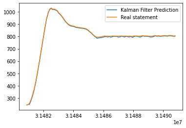

Lab 7 Report
For this lab, I try to implement the Kalman Filter on the robot for faster and
more accurate PID control. To apply Kalman Filter, I first acquired the linear
model of the robot. Then I tested Kalman Filter's update on lab 6's data. And
last I applied it on the robot and see the effects.
Robot Linear Model
For this part, we need to acquire the A B C matrix of its state space representaion,
by using a set duty cycle on the motor and the top speed it achieved to calculate
'd' and 'm' in the below formula.
A = [[0, 1],
[0, -d/m]]
B = [[0],
[1/m]]
C = [1,0]
I set the robot's max duty cycle to 60, and robot motion result shown in Fig.1.
Fig.1 Steady State
I plugged the reuslts in excel and calculated it achieved a top speed of 1.20388 m/s.
Thus, d = max_duty_cycle / max_speed = 60/1203.88 = 0.04983.
For 'm', we need to find a data point that is not at max speed. I chose a point that is
at around 90% of its max speed with 1.07619 m/s at time stamp 4001735, m = -d * t / ln(1 - 1.07619/1.20388) = 0.09636512.
Here is the data sheet I used to calculate the linear model.
Kalman Filter Simulation
After gaining the linear model, I try it out in python with data from lab 6.
Fig.2 is the code I used. And Fig.3 is the result of Kalman filter's prediction.
Fig.2 Python Code

Fig.3 Python Result
From Fig.3, you can see that Kalman filter has a good prediction. I used a pretty large sigma for
both control and readings, 40 and 20 respectively. Seems like I didn't have a very good calculation on 'd' and 'm'.
Kalman Filter Robot Implementation
Now I implemented the Kalman filter onto the robot, and I just translated the python code
to C++ code on the Arduino IDE. See below video and Fig.4 for results.
Fig.4 Python Code
From Fig.4 you can see that there are less jiggle on the robot because now that the robot is updating its states
faster than before. Kalman updates the robot w/o the knowladge of TOF readings, thus it can make decisions much
faster. Though because my sigmas are quite large, thus the prediction may not be that accurate. Though, I didn't
see too much difference from a well tuned PID control, I think if we would have uitilization on faster tasks, then
the advantage of the Kalman filter would show.